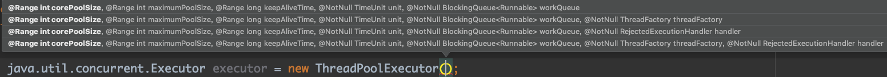
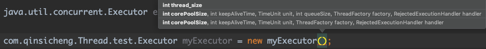

手写线程池
手写线程池
我们从初级阶段自己创建线程去异步执行任务，到后期使用线程池不断执行任务，原理书上都有，但都是字面意思，无法深入理解，所以打算自己进行实现。
- 阶段一：
new Thread(()-> System.out.println("异步执行")).start();- 阶段二:
// 抽离出一个统一接口，具体实现由子类完成
interface Executor {
public void execute(Runnable r);
}
// 定义各自的子类去实现execute方法
@Slf4j
class myExecutor implements Executor {
@Override
public void execute(Runnable r) {
// 底层还是执行的 new Thread(r)，虽然现在看起来是有点儿麻烦，但更方便我们进行扩展了
new Thread(r).start();
}
}- 阶段三：上面我们执行一次方法就创建一个线程，先不说会不会OOM，就线程的创建与销毁都够损耗性能的。我们能不能只使用一个异步线程，但是执行多个任务呢?
这里我之前有一个小疑惑，一般任务都是在
new Thead(这里就指定好需要完成的任务).start()，那假如这个线程执行完了后，我还能不能再指定一个新的任务，让它再启动，后来发现不行，执行完的线程就已经挂了，不能再进行复用，那大家平时说的线程复用是啥意思呢？ 所以转化一些思路，是线程一直在运行，在这期间不断读取一个任务表，第一个任务完成后，马上干第二个任务。以此类推，让一个线程完成多个任务。
// 抽离出一个统一接口，具体实现由子类完成
interface Executor {
public void execute(Runnable r);
}
@Slf4j
class myExecutor implements Executor {
// 创建一个阻塞任务队列
static BlockingDeque<Runnable> task = new LinkedBlockingDeque<>();
static {
// 使用一个线程不断从任务队列中读取数据，然后执行，达到复用的效果
log.info("异步线程开始不断读取任务。。。");
new Thread(() -> {
try {
// 因为无限循环，所以线程会一直运行，后期我们会再升级，让它优雅的结束
while (true) {
// take方法是阻塞方法，当队列中无任务时，线程阻塞
Runnable poll = task.take();
// 当读取到任务时，就开始执行。
poll.run();
}
} catch (InterruptedException e) {
e.printStackTrace();
}
}).start();
}
@Override
public void execute(Runnable r) {
// 新来的任务直接添加到队列中
task.add(r);
}
}阶段四：上面仍有许多潜在的问题
- 其中一个任务报错且未处理，后面的任务别想执行了。
- 其中一个任务耗时过久，新来的任务迟迟不能处理，任务会不断挤压，造成OOM。
- 未利用多核CPU的优势
未利用多核CPU的问题很简单，不是嫌少嘛，我多安排几个线程去不断监控任务队列，这里一定注意队列需要有锁保护，不能一个任务多个线程都处理一遍
@Slf4j
class myExecutor implements Executor {
// 创建一个阻塞任务队列
private static final BlockingDeque<Runnable> task = new LinkedBlockingDeque<>();
// 需要指定多少个线程去执行
private final int CORE_POOL_SIZE;
@Override
public void execute(Runnable r) {
// 新来的任务直接添加到队列中
task.add(r);
}
public myExecutor(int corePoolSize) {
this.CORE_POOL_SIZE = corePoolSize;
init();
}
// 初始化制定线程数去不断监控队列
private void init() {
// 使用一个线程不断从任务队列中读取数据，然后执行，达到复用的效果
log.info("异步线程开始不断读取任务。。。");
for (int i = 0; i < THREAD_SIZE; i++) {
new Thread(() -> {
try {
// 因为无限循环，所以线程会一致运行
while (true) {
// take方法是阻塞方法，当队列中无任务时，线程阻塞
// 通过看源码我们能发现在任务读取时，使用了RetreenLock加锁了
Runnable poll = task.take();
// 当读取到任务时，就开始执行。
poll.run();
}
} catch (InterruptedException e) {
e.printStackTrace();
}
}).start();
};
}
}阶段五：上面有哪些问题呢？
- 我们初始化时直接创建了
corePoolSize个数量的线程，如果一直没任务不就浪费了嘛，还占内存，我们能不能指定corePoolSize后，暂时不创建线程，每次执行任务时，判断当前工作线程数，是否小于corePoolSize,如果小于，我就创建新的线程，否则我就不创建线程了。 - 传入RejectedExecutionHandler对象，任务队列不能无限放置吧，所以当我们判定任务队列已经满了的时候，就需要使用用户传来的RejectedExecutionHandler进行处理，也就是决定这些任务该怎么处理。
- 传入ThreadFactory对象，对线程进行统一的管理，如线程名，需要执行额外的逻辑，而不直接new Thread()。
- 线程自我摧毁装置，当一定时间内都没有获取到任务，就默认线程池不需要太多的线程了，则进行销毁
@Slf4j class myExecutor implements Executor { // 创建一个阻塞任务队列 private static final BlockingDeque<Runnable> task = new LinkedBlockingDeque<>(); // 定制任务队列长度，当队列长度溢出，触发溢出策略 private final int queueSize; // 需要指定多个线程去执行 private final int CORE_POOL_SIZE; // 任务溢出策略 private final RejectedExecutionHandler handler; // 利用工厂模式统一管理线程的创建，例如线程名等信息 private final ThreadFactory factory; // 检查在线线程数量 private AtomicInteger workThreadSize = new AtomicInteger(0); @Override public void execute(Runnable r) { // 这里应该进行同步，因为判断与添加是两个操作 if (workThreadSize.get() < CORE_POOL_SIZE) { // 如果线程数不到核心线程数，每进入一个任务，就添加一个线程 addThread(); } taskAdd(r); } private synchronized void addThread() { factory.newThread(() -> { if (workThreadSize.get() = CORE_POOL_SIZE) { return; } try { while (true) { Runnable poll = task.poll(60, TimeUnit.SECONDS); if (poll == null) { //但当我们任务量可能已经渐渐平缓了，就不再需要那么多线程监听了,这里我们默认可以只剩5个，当然也可以作为参数调整 if (workThreadSize.get() > 5) { synchronized (Executor.class) { if (workThreadSize.get() > 5) { // 让线程结束 Thread.currentThread().interrupt(); workThreadSize.decrementAndGet(); } } } } // 当读取到任务时，就开始执行。 poll.run(); } } catch (InterruptedException e) { e.printStackTrace(); } }).start(); while (true) { // 通过一个自旋锁，来保证在线线程数准确 int size = workThreadSize.get(); if (workThreadSize.compareAndSet(size,size+1)) { return; } } } private synchronized void taskAdd(Runnable r) { if (task.size()>queueSize) { // 这里可以定义不同的任务溢出策略 handler.rejectedExecution(r,null); } task.add(r); } public myExecutor(int thread_size) { this.queueSize = 100; this.CORE_POOL_SIZE = thread_size; // 如果线程池队列满了丢掉这个任务并且抛出RejectedExecutionException异常。 this.handler = new ThreadPoolExecutor.AbortPolicy(); this.factory = Executors.defaultThreadFactory(); } public myExecutor(int queueSize, int CORE_POOL_SIZE, RejectedExecutionHandler handler, ThreadFactory factory) { this.queueSize = queueSize; this.CORE_POOL_SIZE = CORE_POOL_SIZE; this.handler = handler; this.factory = factory; } }- 我们初始化时直接创建了
这里JUC包下定义的参数
这里是我们，自己定义的，唯一不一样就是少了maximumPoolSize,也就是再对线程数量进行控制，这里感兴趣的朋友可以自己试着去做。

总结
如果你能跟随着思路完成到这里，我觉得这块儿知识点，你应该是没问题了，具体代码细节，或者是组件如何使用，就靠你们自己去查询和实验。我感觉我的代码还是通俗易懂的。这里再次感谢低并发编程公众号，我感觉干活满满，推荐大家读一读。